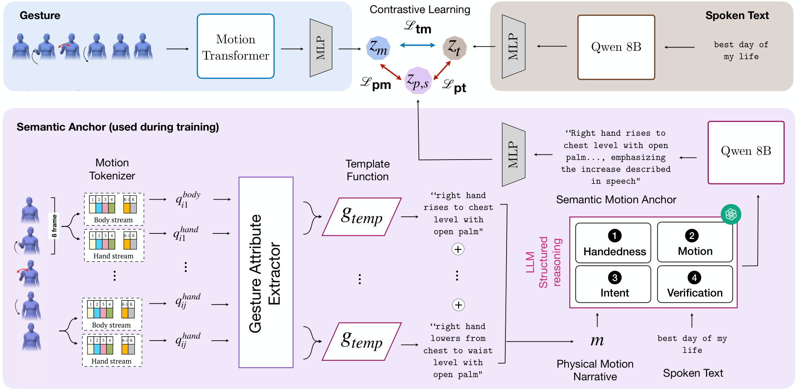

Example 1 · Emotion
Semantic Motion Anchors: Bridging Motion and Meaning in Co-Speech Gestures
NeurIPS 2026
1Saarland University 2MPI for Informatics, Saarland Informatics Campus
3University of British Columbia 4Vector Institute 5Zuse School ELIZA
* Equal contribution
Abstract
We propose semantic motion anchors, natural-language abstractions of gesture motion capturing physical form and communicative intent. On BEAT2, using these descriptions helped the model retrieve gestures that better matched the speaker’s intent.
Read the full abstract
Learning a shared representation between spoken text and gesture is central to co-speech gesture retrieval, synthesis, and understanding, but remains challenging for semantically meaningful gestures whose communicative intent is not captured by motion alone. Direct contrastive alignment between transcripts and continuous motion embeddings often overemphasizes low-level kinematics and misses the symbolic content of semantic gestures. We propose semantic motion anchors, natural-language abstractions of gesture motion capturing physical form and communicative intent. Our method discretizes 3D gestures into body-hand motion primitives, verbalizes them into structured descriptions, and grounds them in the transcript to provide auxiliary contrastive supervision. On BEAT2, our method improves text-to-gesture R@1 by 8.2% over a direct text-motion baseline and outperforms prior retrieval approaches on text to gesture and gesture to text retrieval directions. Beyond aggregate retrieval metrics, semantic motion anchor supervision helps retrieve gestures that are semantically meaningful for the spoken query, rather than defaulting to generic motion patterns. A downstream retrieval-augmented gesture generation study showed that users significantly preferred gestures retrieved by our approach over a retrieval-augmented generation baseline, demonstrating that semantically grounded retrieval translates to gestures that better convey communicative intent in downstream generation.
Method overview
We introduce semantic motion anchors for text-gesture retrieval, representing co-speech gestures through natural-language descriptions of form and intent.

How are gestures annotated? Explore SEMANTIX construction, statistics and examples →
Retrieval results
On BEAT2, semantic motion anchors raise text-to-gesture Recall@1 from 39.1% to 42.3% over direct text–motion alignment, an 8.2% relative improvement.
Compare exact retrieval scores
Each query ranks 856 candidates. Recall@K is the percentage of queries whose paired match appears in the first K results. MRR measures the reciprocal rank of that match, averaged across queries and shown on a 0–100 scale. Higher is better for all four metrics.
Compared with Text Contrastive (paired t-test): ** p < 0.01; † p < 0.001.
Explore match rates by gesture intent
A retrieved clip can differ from the paired clip but express the same intent. This measure counts how often the first retrieved clip has the same intent label as the paired gesture.
| Intent | Clips | Ours | Text contrastive | Random anchor |
|---|---|---|---|---|
| Emphasis | 250 | 57.2 | 52.8 | 57.2 |
| Discourse | 227 | 62.1 | 57.7 | 61.7 |
| Other-reference | 111 | 59.5 | 56.8 | 58.6 |
| Self-reference | 92 | 52.2 | 52.2 | 44.6 |
| Symbolise | 68 | 48.5 | 44.1 | 44.1 |
| Contrast | 24 | 50.0 | 41.7 | 50.0 |
| Emotion | 16 | 56.2 | 43.8 | 50.0 |
| Uncertainty | 15 | 66.7 | 53.3 | 60.0 |
| Temporal reference | 12 | 50.0 | 33.3 | 50.0 |
| Quantification | 11 | 45.5 | 27.3 | 27.3 |
| Negation | 10 | 50.0 | 60.0 | 50.0 |
| Relativity | 9 | 66.7 | 55.6 | 77.8 |
| Enumeration | 6 | 33.3 | 33.3 | 33.3 |
| Progression | 3 | 0.0 | 0.0 | 0.0 |
| Listing | 2 | 50.0 | 50.0 | 50.0 |
| Overall | 856 | 56.9 | 52.6 | 55.1 |
Qualitative retrieval examples
Example 2 · Self-reference
“…when I'm free I like to listen to music or watch documentary movies…”
Downstream application: Co-speech gesture generation
Participants preferred gestures retrieved by our method 72.2% of the time, compared with 27.8% for RAG-Gesture.
Example 01 of 13
View generation demo · Example 01
Example 02 of 13
View generation demo · Example 02
Example 03 of 13
View generation demo · Example 03
Example 04 of 13
View generation demo · Example 04
Example 05 of 13
View generation demo · Example 05
Example 06 of 13
View generation demo · Example 06
Example 07 of 13
View generation demo · Example 07
Example 08 of 13
View generation demo · Example 08
Example 09 of 13
View generation demo · Example 09
Example 10 of 13
View generation demo · Example 10
Example 11 of 13
View generation demo · Example 11
Example 12 of 13
View generation demo · Example 12
Example 13 of 13
View generation demo · Example 13
How did participants compare the gestures?
Each of the 32 participants made 10 forced choices between paired gesture animations. For the same spoken query and retrieval database, participants compared the gesture retrieved by RAG-Gesture with the gesture retrieved using semantic motion anchors.
BibTeX
@inproceedings{suresh2026semantic,
title = {Semantic Motion Anchors: Bridging Motion and Meaning in Co-Speech Gestures},
author = {Varsha Suresh and Mohammad Mahdi Abootorabi and Mohamed Salman and M. Hamza Mughal and Christian Theobalt and Ashwin Ram and J{\"u}rgen Steimle and Vera Demberg},
booktitle = {Proceedings of the 40th Annual Conference on Neural Information Processing Systems (NeurIPS'26)},
year = {2026},
url = {https://arxiv.org/pdf/2605.30608}
}Explore more
More publications and datasets from Varsha Suresh and collaborators.